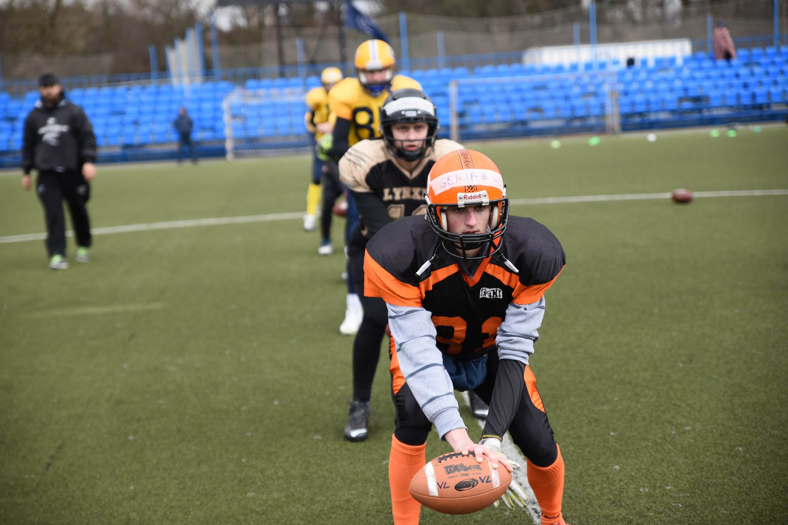
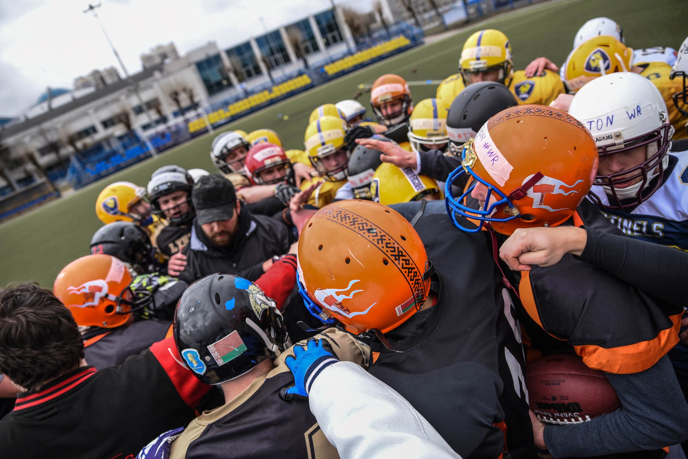

Monte Clark Training Camp 2017

18 марта на стадионе СОК «Олимпийский» прошел тренировочный лагерь, организованный устроителями стартующего совсем скоро турнира Кубок Монте Кларка.
В лагере могли принять участие игроки команд-участников Кубка. Однако желающих оказалось так много, что устроители вынуждены были ввести квоты для каждой команды. В итоге лагерь посетили почти сто спортсменов из Беларуси, Литвы и России.
К слову, лагерь прошел под руководством приглашенных тренеров из Германии. Интервью с ним читайте на страницах нашего издания в ближайшие дни.
&G удалось узнать впечатления участников и устроителей мероприятия. Евгений Горавский, квотербек, «Паганцы» (Минск).
— Что главное? Я познакомился с огромным числом людей, сумел обменяться опытом и мнениями, что для меня было всегда важно. Оправдались ли все мои ожидания? Скажем так 70/30… Например, я ожидал большего объема работы с ресиверами, и мои представления в этом плане, конечно, были немного другими. В очередной раз нам напомнили, как все же важно правильно работать ногами после получения передачи. Дополнительно удалось подсмотреть пару новых упражнений, ну и в целом как действовать в той или иной ситуации. Языкового барьера как такового не было, спасибо большое ребятам, которые оперативно все переводили. К моему большому сожалению, я не попал на теоретическую часть по семейным обстоятельствам, о чем сильно жалею… Конечно, надеюсь, что такие лагери отныне будут проходить на постоянной основе. Впечатления просто безумные, столько человек было, даже ребята из Калининграда!
Олег Стефанович, координатор нападения, «Зубры» (Минск), организатор Кубка Монте Кларка
— Считаю, что лагерь завершился успешно. Акцент был сделан на подготовку игроков начального уровня. По отзывам участников, они получили много интересной и полезной информации. В части организации я не заметил каких-то накладок и неудобств. Не было сомнений, что приглашенные специалисты смогут доступно передать необходимые навыки. А вот по самой организации, конечно, были сомнения с учетом большого количества участников, но к нашей радости все получилось! Если говорить о том, что можно улучшить , то, несомненно, такие масштабные лагеря требуют большего количества тренерского персонала. В идеале 7-8 человек иностранных специалистов, чтобы каждая игровая линия не оставалась без внимания (устроители лагеря взяли на себя все расходы по приему специалистов — прим. ред.).
Возможно, было бы более продуктивно, если бы лагерь проходил два дня. Разумеется, чувствовался разный уровень подготовки участников, но эта проблема тоже разрешима при наличии в достатке тренерского персонала. Постараемся учесть этот момент при подготовке следующих кэмпов. В любом случае всем все понравилось. По словам немецких специалистов, не каждая команда в Германии имеет такие условия для тренировок и обучения!
Кубок Монте Кларка стартует уже через две недели. В Минске «Зубры» примут «Титанов», а «Янтарные Ястребы» отправятся в гости к «Железным Волкам».